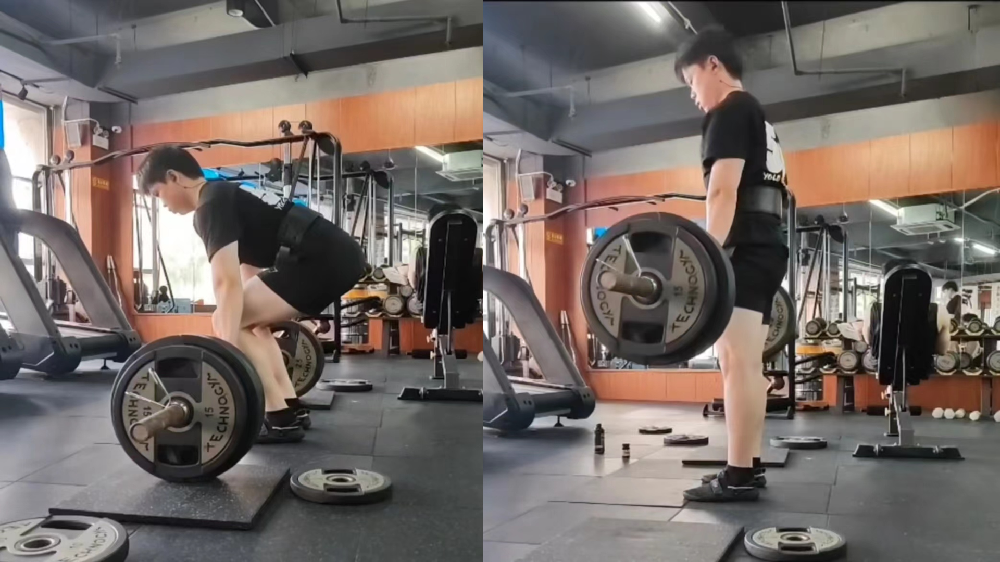
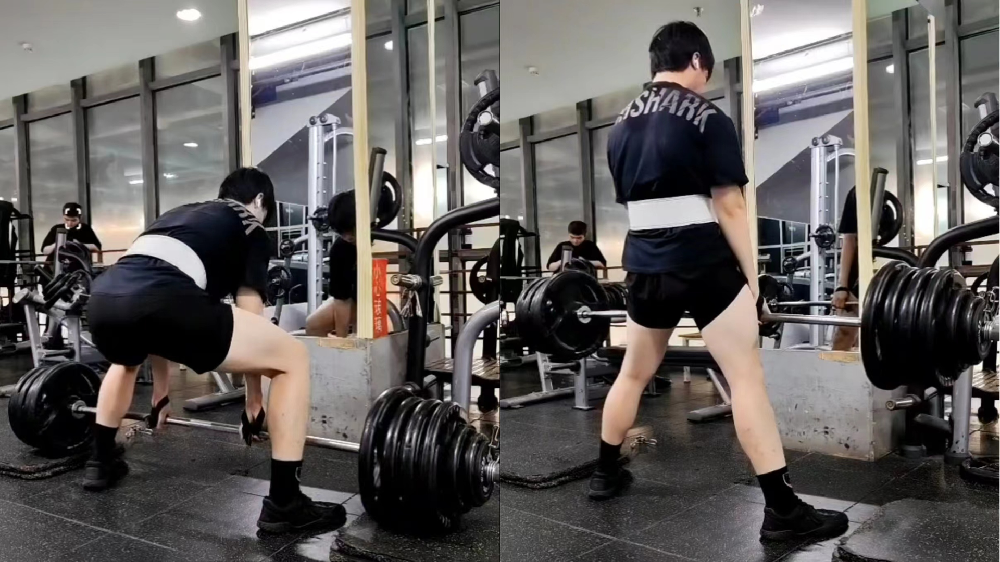
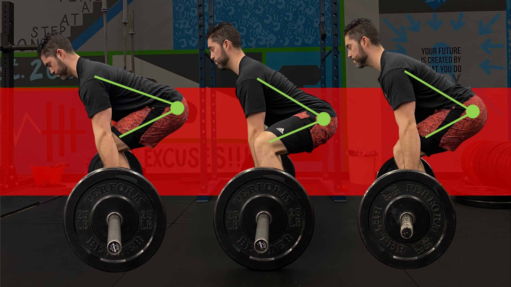

硬拉（Deadlift）
 硬拉是力量举三项中的最后一项，也是三项中唯一一项能利用到全身肌肉的动作，也是重量最大的一项（一般来说）。地上装配好杠铃，选手站在杠铃前（站距取决于进行的是传统硬拉还是相扑硬拉，具体见下文）。选手屈髋屈膝俯身，双手抓握杠铃，将杠铃拉起，站直。选手的膝盖、髋关节与肩关节均锁定，且杠铃静止后，裁判给出“Down”口令，选手即可放下杠铃至地面（下放过程中杠铃可自由落体，但选手双手不得离开杠铃，即不可直接丢杠），完成动作。
传统硬拉 vs. 相扑硬拉
力量举式的硬拉主要分为两种，即传统硬拉（Conventional Deadlift，如第一张图片所示）与相扑硬拉（Sumo Deadlift，如第二张图片所示）。传统硬拉时，选手双脚间距较窄（一般与肩同宽，或稍宽于肩），双手握杠时在双腿外侧，会使得屈髋幅度更大，上半身倾斜的角度更大，动作行程更长，也会使下背、臀部、与大腿后侧股二头肌压力更大，但对选手大腿外展的柔韧性要求较低，常见于大体重级别选手中。而相扑硬拉时，选手双腿张开，如同相扑运动员一般，双手握杠时在大腿内侧，屈髋幅度较小，且上半身更笔直，动作行程也更小（故一般来说能拉起更大重量），对下背压力较小，但对大腿前侧股四头肌和内侧的内收肌要求较高，也需要选手有较好的大腿外展能力，常见于小级别选手中。
髋铰链（Hip Hinge）的建立
无论是传统还是相扑，抑或是其他各种类型的硬拉，髋铰链的建立都是至关重要的。髋关节铰链是人体非常重要的动作模式，是一种通过髋关节屈曲与伸展的动作。硬拉就是一个典型的髋关节屈伸动作，需要保持脊柱处于中立位，膝盖稍微弯曲，以髋部作为人体的枢纽关节进行相应的运动，而不是腰椎或腰背弯曲执行动作。正确的髋关节铰链会将大部分的重量放在臀部与腿部而不是下背部，这样执行相应的动作时就会利用到人体非常强壮的两大肌肉群。如果没有正确的执行髋关节铰链这个动作，则大部分的压力将会作用于下背部，久而久之，下背部就会出现相应的损伤。髋铰链的建立是进行大重量硬拉的基础，也是每位力量举运动员的必修课。
